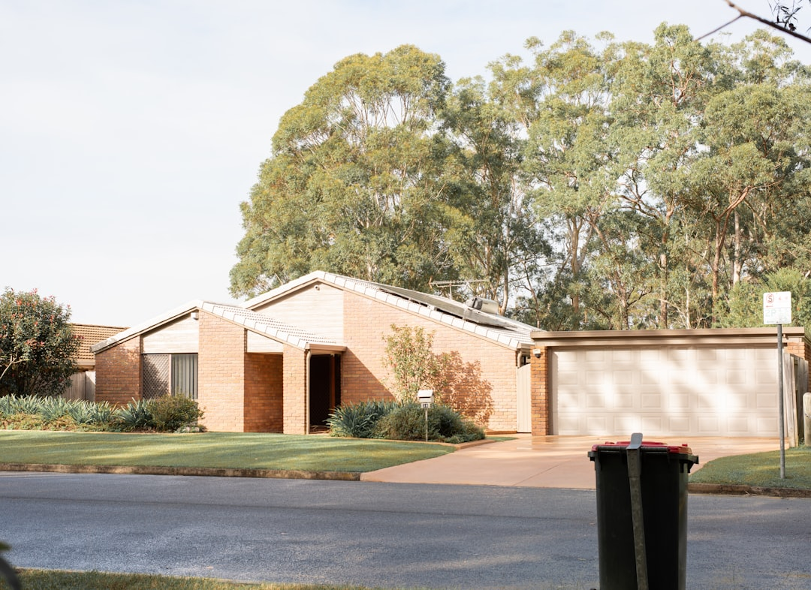

For households comparing kitchen renovation western sydney options, the real decision is how to set scope, read the cost bands, and confirm strata, warranty and contract documents before work starts. See Kitchen Renovation Western Sydney for the current service details.
Kitchen Renovation Western Sydney Explained
On the published Kitchen Renovation Western Sydney page, the clearest distinction is between a smaller refresh, a full renovation, custom cabinetry, stone benchtops, strata work and older home projects. That separation matters because a number only helps when the inclusions reflect the actual job.
Before asking for prices, write a short brief that says what stays, what changes, and whether the room needs layout work, cabinetry, benchtops or licensed trade work. If the project is mainly cabinet doors, handles, splashback or benchtop replacement, frame it as a makeover. If storage, layout and handover are all in scope, treat it as a full renovation from the start.
- List existing items you plan to keep.
- Note whether the job is a makeover or a full replacement.
- Flag strata or older home conditions before quotes are prepared.
Use the cost bands as a scope check
The published cost ranges are useful because they separate broad project types. Most fully fitted jobs are placed at $25,000 to $65,000. A budget refresh starts around $18,000, a mid range full renovation is typically $35,000 to $50,000, and premium work with stone, brass and custom joinery can exceed $80,000.
Those figures are best read as scope signals, not automatic promises. A refresh usually fits projects centred on visible surface changes and targeted upgrades. A fuller budget is more realistic when the brief includes cabinetry, broader layout changes, benchtops, licensed trade work and handover. Premium pricing generally follows higher specification materials and more customised joinery.
When two quotes look far apart, the first check is whether both include the same room elements, site work and finish level. Without that alignment, the cheaper number may simply describe less work.
Timing depends on the front half as well
The source page says to allow 4 to 8 weeks from contract signing to handover, and that site work itself is usually 2 to 3 weeks once cabinetry is on site. That split is worth understanding because many owners focus on the visible works period and overlook the earlier procurement stage.
The same page points to cabinets, stone and appliances as the items driving the front half. That makes them the first scheduling questions to ask when comparing providers. If you are planning around a move, school term, tenant turnover or a temporary cooking setup, ask which items must be ordered first and what has to be confirmed before fabrication starts.
For apartments and other shared buildings, timing can also hinge on written approval before work starts. Even a straightforward room update can stall if the document trail is treated as an afterthought.
Who this guide is most useful for
This guide is most useful for four common situations already visible in the published page. The first is the owner planning a whole project renovation where layout, cabinetry, benchtops, licensed trades and handover need to be considered together. The second is the owner who wants a lighter makeover focused on doors, handles, splashback or benchtop updates.
The third is the strata owner who needs to ask early about written approval and required documents. The fourth is the owner of an older home. The source page specifically refers to post war brick, fibro, terrace and heritage stock kitchens, which is a practical prompt to raise existing conditions before the scope is priced.
If your project sits between two of these groups, use that overlap to sharpen the brief rather than hoping a provider will interpret the grey areas the same way you do.
What to confirm before you sign
The most important pre contract check is documentation. The source page says the provider you choose should supply licence, insurance and contract details before work starts. It also notes that kitchen renovation work in NSW can require appropriately licensed trades and builders, so the paperwork is part of the project decision, not an afterthought.
Warranty is the next area to pin down. The page says warranty terms vary by provider, product and contract, and it recommends asking for workmanship, cabinetry, benchtop and appliance warranty terms in writing before work starts. That written record helps when two proposals appear similar on price but differ on what is covered after handover.
If the job is in a strata building, confirm who is gathering the required documents before approval. If you are still at enquiry stage, the page also says quote requests receive a response within one business day, which gives you a practical benchmark for early follow up.
- Check licence details before approval.
- Ask for insurance and contract documents before work starts.
- Request warranty terms in writing for each major component.
- Confirm any strata document list before signing.
- Define the brief. Write down whether the job is a makeover, a full renovation, a strata project or an older home update before requesting prices.
- Align the inclusions. Ask every provider to price the same cabinetry, benchtop, appliance and trade scope so the comparison is fair.
- Check the paperwork. Request licence, insurance, contract and warranty details before work starts so approvals are based on documents, not assumptions.
- Test the timing. Ask what is driving the lead time, especially cabinetry, stone and appliances, and whether written approval is on the critical path.
| Scope | Typical use | Source cost signal |
|---|---|---|
| Budget refresh | Cabinet doors, benchtop, splashback and targeted upgrades | Starts around $18,000 |
| Mid range full renovation | Broader room replacement with fuller renovation scope | Typically $35,000 to $50,000 |
| Premium custom project | Stone, brass and custom joinery | Can exceed $80,000 |
This guide covers how to compare scope, cost bands, timing and pre contract checks for a Western Sydney kitchen project.